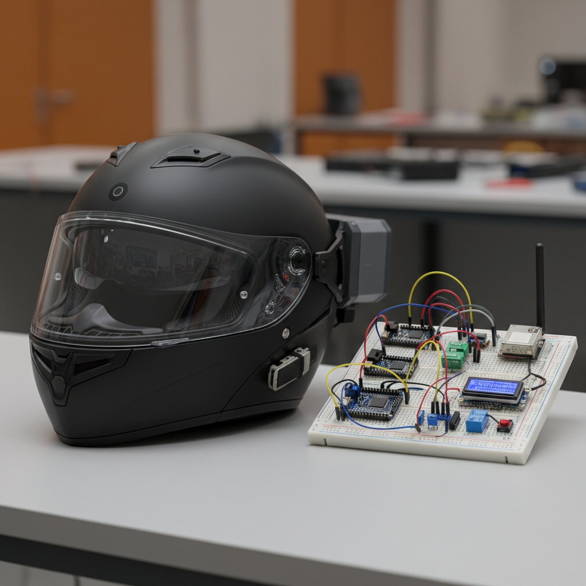

Hardware Prototype & Test Bench
Event:
SIH 2026 Internal Hackathon
Role:
Team Member (Concept, Sensor & System Design)
Status:
Verified Participation
CASE 01 // CONNECTED HARDWARE
SIH 2026 Problem SIH26220
Smart Rider: Connected Safety Helmet & Ignition Interlock
Problem Statement
Two-wheeler riders represent a disproportionate share of road fatalities due to riding without helmets, alcohol impairment, and delayed post-crash rescue dispatch. Traditional helmets act as passive gear without active prevention or emergency alerting.
My Contribution & Role
As a core member of Team Smart Rider, I contributed to the technical concept development, dual-unit system partitioning, sensor evaluation (FSR, MQ-3 alcohol, MPU6050 accelerometer/gyro), and local fail-safe interlock evaluation logic.
Architecture & Signal Flow
[HELMET UNIT: ESP32]
├── FSR (Helmet Worn Check)
├── MQ-3 (Alcohol Threshold)
└── MPU6050 (Impact & Tilt)
│ (433 MHz RF Packet)
▼
[BIKE CONTROLLER: ESP32]
├── Safe Pre-Checks ──► Ignition Interlock Relay
└── Impact Detected ──► Buzzer Alert Window ──► GPS + Cellular Emergency SMS
Engineering Decisions
- Edge-First Processing: Core start interlock decisions run locally on ESP32 microcontrollers—zero dependency on internet connectivity for basic rider safety.
- False-Alert Reset Window: Potholes or dropped helmets trigger an audible buzzer window allowing riders to cancel false emergency dispatches before cellular SMS alerts fire.
ESP32
Embedded C++
433 MHz RF
MQ-3 Alcohol Sensor
FSR Sensor
MPU6050 Accelerometer
Relay Interlock